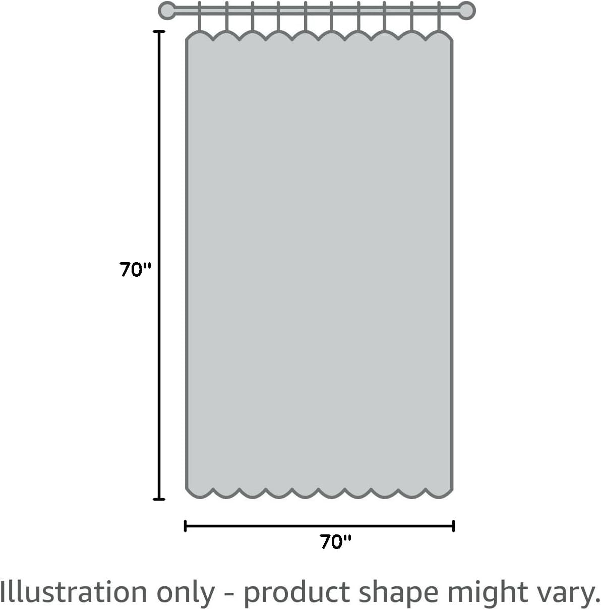
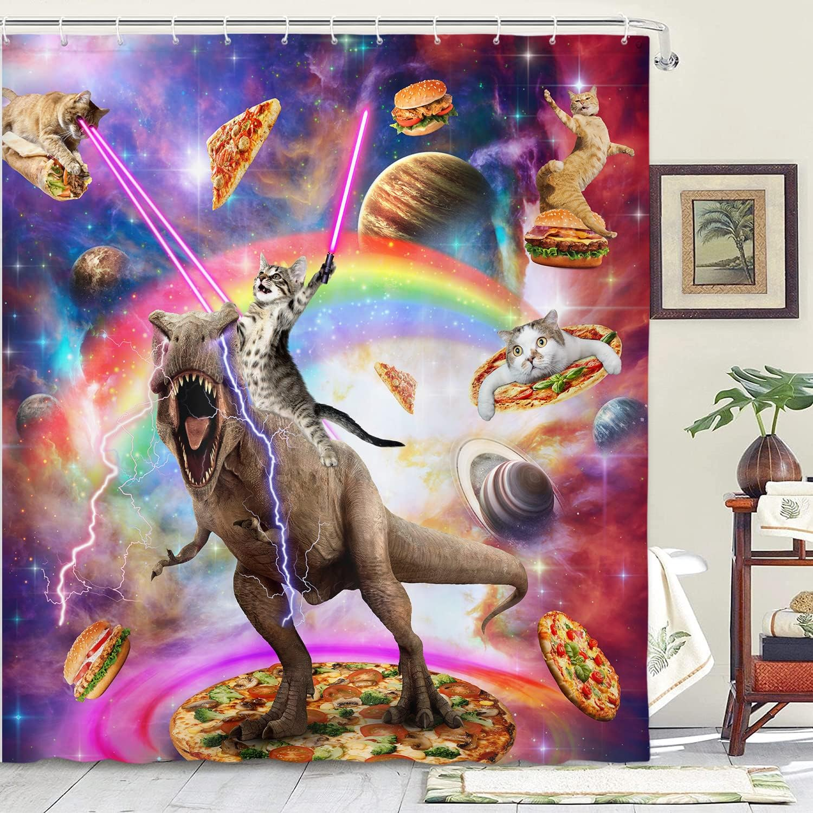
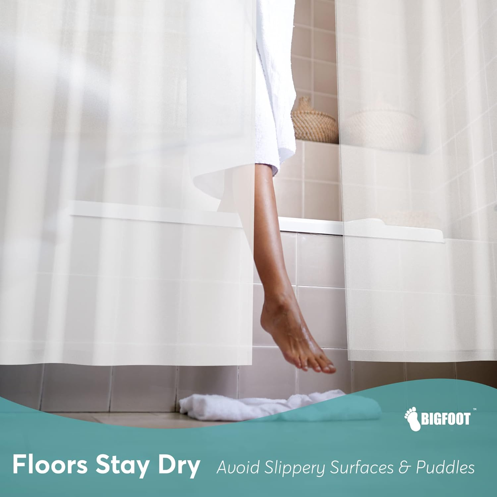
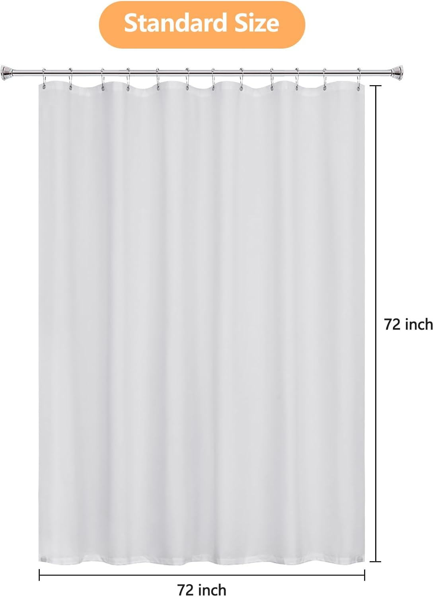
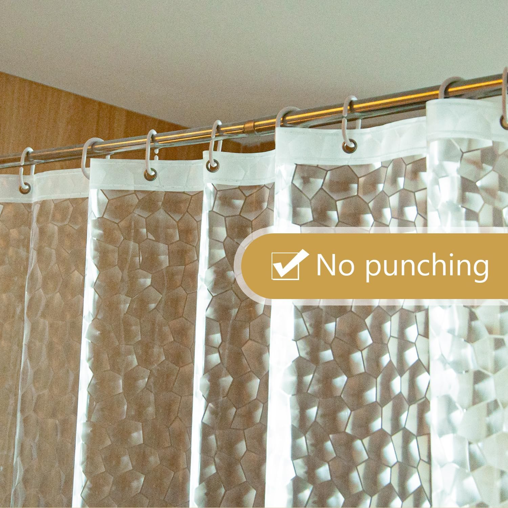
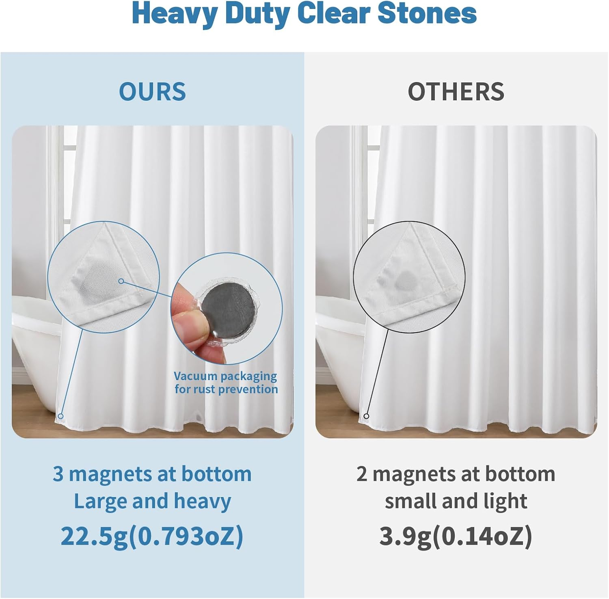

Best Shower Curtains for Clawfoot Tubs: The Complete 2026 Guide
Clawfoot tubs are beautiful architectural statements — but outfitting them with the right shower curtain is a genuine challenge. Unlike standard wall-mounted shower rods, clawfoot setups require wraparound curtains that encircle the entire tub. The wrong curtain leaves water spraying onto your bathroom floor, ruins your vintage aesthetic, or bunches awkwardly around the tub rim. In this guide, we review the 6 best shower curtains for clawfoot tubs of 2026 — covering PEVA liners, fabric curtain sets, and wraparound systems so you get complete coverage with zero compromise on style.


Ilane Tall
Product Researcher | Specializing in bathroom products and home textiles
Published March 25, 2026. All recommendations based on rigorous product research and customer review analysis.
Wimaha Clawfoot Tub Shower Curtain Set — 180" Wraparound with Liner
Complete 180-inch wraparound coverage, includes matching PEVA liner with snap closures, 36 rings, and rust-resistant hooks. The best all-around clawfoot solution.

Clawfoot tubs have made a remarkable comeback in bathroom design over the last decade. Once considered old-fashioned relics, these freestanding cast-iron or acrylic beauties are now centerpieces of renovated bathrooms, boutique hotels, and design-forward rental properties. But here's the practical reality: their distinctive shape — sitting in the middle of the room with no walls to anchor a shower rod — creates unique challenges for shower curtain selection that standard curtain guides never address.
A clawfoot tub requires a full perimeter curtain system. You need a curtain wide enough to wrap all the way around (typically 180 inches), long enough to prevent splashing (at least 70 inches), and hung from an oval or rectangular ceiling ring that encircles the tub completely. The wrong combination leads to water on the floor, a ruined vintage aesthetic, or a constantly tangled mess of curtain fabric. For guidance on choosing the correct dimensions, see our shower curtain size guide.
We spent three weeks researching over 30 clawfoot tub curtain options, analyzing customer reviews across multiple purchases, and comparing material quality, liner systems, and ring compatibility. Whether you want a simple PEVA liner to protect a fabric curtain you already own or a complete wraparound system with matching accessories, our curated list covers every scenario.
Why Clawfoot Tubs Need Special Shower Curtains
Understanding why clawfoot tubs demand purpose-built curtains will help you avoid the most common and costly mistakes. The differences go far beyond just needing a wider curtain.
The Wraparound Requirement
A standard shower uses two walls to anchor the curtain, leaving only the entry side open. Your curtain needs to span roughly 60-72 inches — one side of a rectangle. A clawfoot tub sits freestanding, meaning a shower curtain must cover all four sides of an oval or rectangular perimeter. That perimeter is typically 140-200 inches depending on tub size, which is why purpose-made clawfoot curtains are 180 inches wide (or sold as panel pairs). Using a standard 72-inch curtain leaves 75% of the tub's perimeter completely unguarded.
Ceiling-Mount vs. Freestanding Ring Systems
Clawfoot tub shower rings come in two forms: ceiling-mounted rings that drop from the bathroom ceiling on threaded rods, and freestanding oval rings with their own floor or tub-rim supports. Your ceiling height, bathroom layout, and tub position all affect which system works. Most curtains in our guide work with either ring type, but ring compatibility is something to confirm before purchasing. See our dedicated shower curtain hooks and rings guide for clawfoot-specific hardware recommendations.
The Liner Layer
Because clawfoot curtains are often decorative fabric pieces that command premium prices, using them as a direct water barrier would degrade them quickly. The standard solution is a two-layer system: a waterproof liner on the inside that catches all the water, and a decorative fabric curtain on the outside that everyone sees. Some systems use snap-buttons to connect the liner to the fabric curtain so they move together as one unit — a significant quality-of-life improvement over managing two separate curtains.
The Extra-Long Length Consideration
Clawfoot tubs sit higher off the ground than a standard recessed tub — often 18-24 inches of leg height plus the tub body. This means your curtain needs to reach from the ceiling ring (typically 7 feet high) all the way to the tub rim, which can be 28-36 inches off the floor. The result is that standard 72-inch curtains often just barely work, while extra-long curtain options give you more drape and better protection. Always measure your specific ring height to tub rim before ordering.
6 Best Shower Curtains for Clawfoot Tubs (2026)
1. Wimaha Clawfoot Tub Shower Curtain Set 180" — Best Overall


The Wimaha clawfoot curtain set is the gold standard for anyone outfitting a freestanding tub for the first time. This complete 180-inch wraparound system includes everything you need: a decorative fabric outer curtain, a matching waterproof PEVA liner with snap closures, 36 rust-resistant rings, and all necessary hooks. The snap-closure system between curtain and liner is a genuine quality-of-life upgrade — both layers move as one unit, eliminating the frustration of a liner that slides independently inside the decorative curtain.
Pros:
- Everything included: One purchase covers curtain, liner, rings, and hooks — no guesswork on compatibility
- Snap-close liner system: Liner and curtain move together as one unit, eliminating the sliding liner problem
- True 180" coverage: Properly proportioned for standard clawfoot tub perimeters without awkward bunching
- 36 rust-resistant rings: Evenly spaced for smooth, full gathering around the entire oval
- Machine washable fabric curtain: Easy maintenance that extends the curtain's lifespan
Cons:
- White and off-white color options only — no bold colors or patterns
- PEVA liner, while effective, is not eco-friendly compared to fabric liners
The Wimaha set stands out because it was clearly designed by someone who actually uses a clawfoot tub. The snap connections between liner and curtain solve the number-one complaint about clawfoot shower systems — the liner that drifts inside while the outer curtain stays outside. Every ring, hook, and closure is rust-resistant, which matters in a high-humidity environment. For most people setting up a clawfoot tub shower for the first time, this is the only curtain set they will ever need.
Check Price on Amazon2. Barossa Design Cotton-Blend Clawfoot Curtain 180" — Best Premium Fabric



For homeowners who want the warmth and texture of real fabric rather than polyester, the Barossa Design cotton-blend clawfoot curtain delivers a premium look and feel that photographs beautifully and drapes with natural weight. The 55% cotton and 45% polyester blend strikes a careful balance: enough cotton for authentic texture and breathability, enough polyester for water resistance and wash durability. This is the curtain that design-focused homeowners choose when they want their clawfoot tub to anchor a genuinely upscale bathroom.
Pros:
- Natural cotton feel: The 55% cotton content gives the curtain a warmth and softness that pure polyester cannot replicate
- Excellent drape: The fabric weight hangs beautifully on oval rings without bunching or static
- Breathable fabric: Reduces moisture trapping that can lead to mildew in purely synthetic curtains
- Multiple color options: Available in white, cream, and grey to match different bathroom palettes
Cons:
- Liner sold separately — adds cost for a complete waterproof system
- Cotton content means slightly longer drying time after washing
The Barossa Design cotton-blend exemplifies what a premium clawfoot curtain should be. The fabric hangs with the natural weight and movement of a quality textile — not the stiff, slightly synthetic drape of pure polyester alternatives. Pair it with a separate fabric liner if you want to avoid plastic entirely. This is the curtain to choose when the tub is the centerpiece of a renovated bathroom you want guests to notice.
Check Price on Amazon3. Utopia Bedding PEVA Clawfoot Tub Liner 180" — Best Budget Liner


Sometimes the most practical solution is the most elegant one. The Utopia Bedding PEVA liner solves the clawfoot waterproofing problem at a fraction of the cost of a full curtain set. If you already have a decorative fabric curtain you love — or if you want the simplest possible solution for a guest bathroom or rental property — this clear PEVA liner provides complete 180-inch wraparound protection without competing with your existing decor. The clear material keeps the space feeling open and lets the tub's beautiful lines remain visible.
Pros:
- Fully waterproof: PEVA provides 100% water barrier protection at a budget price point
- Clear design: Doesn't interfere with existing decor or block the tub's visual appeal
- 36 metal grommets: Evenly spaced for smooth distribution around the full 180-inch perimeter
- PVC-free PEVA: Less off-gassing than traditional vinyl liners, a meaningful health benefit in enclosed bathrooms
- Easy to clean: Wipe down or hand wash — no machine washing needed
Cons:
- Not decorative — purely functional; needs a fabric curtain layered outside for aesthetics
- PEVA can develop water spots over time if not dried between uses
This liner is the secret weapon for anyone upgrading an existing clawfoot tub setup without replacing their curtain. It's also the right choice for vacation rentals where durability and replaceability matter more than aesthetics. The PEVA material is genuinely heavy-duty — not the thin, flimsy vinyl you find in budget hotel bathrooms — and the 36-grommet system distributes the weight evenly so the liner doesn't sag or puddle at the bottom.
Check Price on Amazon4. Croscill Linen-Look Clawfoot Curtain & Liner Set — Best Linen Style


Croscill is a recognized name in upscale home textiles, and their linen-look clawfoot curtain set reflects that heritage. The fabric uses a textured polyester weave that convincingly replicates real linen's appearance — the irregular grain and natural color variation — without linen's demanding care requirements. This set is particularly popular in farmhouse, coastal, and European-inspired bathroom styles where natural textile textures are a design priority. The included liner connects via a hook system that keeps both layers properly positioned without snap buttons.
Pros:
- Convincing linen texture: The textured weave creates authentic-looking natural fiber appearance at polyester's practical price
- Croscill quality assurance: Established brand with consistent finishing, even stitching, and reliable color
- Versatile neutral tones: Natural white and ivory options coordinate with wood, rattan, and aged-brass bathroom fixtures
- Complete set: Includes liner for immediate installation without additional purchases
Cons:
- Higher price point than comparable polyester sets without the linen premium
- Hook system (vs. snap buttons) means liner and curtain can separate if not managed carefully
The Croscill linen-look set shines in bathrooms with a deliberate design language. If your clawfoot tub sits on original hexagonal tile floors with aged-brass fixtures and a freestanding wooden vanity, this curtain's texture ties the entire room together in a way that a smooth white polyester curtain simply cannot. For spa-inspired or luxury hotel-style bathrooms, the textured linen appearance is exactly the right finishing touch.
Check Price on Amazon5. mDesign Fabric Clawfoot Curtain 2-Panel System — Best Modular Option


Not every clawfoot tub setup calls for a single massive 180-inch curtain. The mDesign two-panel system offers a modular approach: two individual 72-inch wide curtain panels that together provide full wraparound coverage when hung on an oval ring with a deliberate overlap at the entry point. The advantage of this approach is customization — you can use panels of different colors for a two-tone look, swap out one panel without replacing the entire set, or use a single panel as a half-coverage privacy screen for open-concept bathrooms.
Pros:
- Modular flexibility: Mix colors, replace individual panels, or use a single panel for partial coverage
- Easier to wash: Two smaller panels are much easier to launder than one giant 180-inch curtain
- More color options: Greater variety available in the two-panel configuration than in purpose-made 180-inch options
- Adaptable to different tub sizes: Works for smaller or larger perimeters by adjusting the overlap
Cons:
- Requires careful placement to ensure the overlap seam doesn't create a water-leak gap
- Two panels may not gather as evenly as a single 180-inch curtain on the oval ring
The two-panel system solves a real problem: most purpose-made 180-inch clawfoot curtains come in white or cream only, leaving design-forward homeowners with limited options. The modular approach opens up the full range of standard curtain colors and patterns. Just be mindful of the overlap: the two panels should overlap by at least 10-12 inches at the entry point to prevent water from escaping through the seam. For reference on properly sizing curtains for clawfoot setups, consult our sizing guide.
Check Price on Amazon6. Eforcurtain Extra-Heavy Clawfoot Curtain 180x78" — Best Extra Long


Clawfoot tubs with higher ceiling-mounted rings — common in older homes with 9 or 10-foot ceilings — need extra length to bridge the gap between ring and tub rim without exposing the legs and sides. The Eforcurtain extra-heavy option addresses this directly with a 78-inch length that provides 6 inches more coverage than standard 72-inch curtains. The extra-heavy fabric weight (rated at 280 GSM) is another distinguishing feature: this curtain drapes with such gravitas that it virtually never billows inward, even in steam-heavy shower conditions. See our extra long shower curtain guide for more options in this category.
Pros:
- 78" extra length: Covers the gap between ring and tub rim in bathrooms with 9-foot-plus ceilings or tall tub legs
- 280 GSM weight: Exceptional drape and virtually zero billowing — the heaviest clawfoot option we tested
- Hotel-grade construction: Tight weave and reinforced grommets that withstand daily use in a demanding shower environment
- Strong water resistance: The extra fabric weight holds water-repellent treatment more effectively than lightweight alternatives
Cons:
- Heavier fabric is harder to wring out and takes longer to air dry
- 280 GSM weight requires a robust oval rod — not suitable for lightweight freestanding rings
The Eforcurtain is the specialist's choice: specifically designed for the situations where standard 72-inch clawfoot curtains fall short — literally. In Victorian-era homes with 10-foot ceilings, the ceiling ring sits higher and the tub legs can be taller, creating a coverage gap that lets water escape down the tub's sides. The 78-inch length eliminates that gap with room to spare. The 280 GSM weight is genuinely impressive; when this curtain is on the ring, it stays exactly where you put it regardless of shower conditions.
Check Price on AmazonQuick Comparison: All 6 Clawfoot Tub Curtains
| Product | Width | Best For | Key Feature | Liner Included? |
|---|---|---|---|---|
| Wimaha Set | 180"x72" | Best Overall | Snap-closure liner system | Yes (PEVA + snaps) |
| Barossa Cotton-Blend | 180"x72" | Best Premium Fabric | 55% cotton blend | No (sold separately) |
| Utopia PEVA Liner | 180"x72" | Best Budget Liner | Clear 100% waterproof | Liner only |
| Croscill Linen-Look | 180"x72" | Best Linen Style | Textured linen weave | Yes (hook system) |
| mDesign 2-Panel | 2x72"=144" | Best Modular | Mix-and-match panels | No |
| Eforcurtain Extra Long | 180"x78" | Best Extra Long | 280 GSM heavy weight | No |
Complete Sets
Best Overall: Wimaha
Linen Style: Croscill
MOST CONVENIENT
Curtain Only
Premium Fabric: Barossa
Extra Long: Eforcurtain
BEST CUSTOMIZATION
Liner / Modular
Budget: Utopia PEVA
Modular: mDesign panels
BEST FLEXIBILITY
How to Choose the Right Clawfoot Tub Shower Curtain
Step 1: Measure Your Tub's Perimeter
Before anything else, measure the circumference of your clawfoot tub at the point where water would exit. For a standard 5-foot clawfoot tub, the perimeter is typically 140-165 inches. A 6-foot tub runs 165-185 inches. Purpose-made clawfoot curtains at 180 inches accommodate most standard tubs with appropriate gathering. If your tub is unusually large or oval-shaped, you may need the two-panel system or a custom-ordered wide curtain. Don't skip this measurement — it's the most common source of clawfoot curtain mistakes. Our complete sizing guide covers measurement techniques for every tub configuration.
Step 2: Measure Your Ring Height to Tub Rim
Standard clawfoot curtains are 72 inches long. Your ring needs to be mounted so that 72 inches of curtain reaches from the ring to the tub rim (not the floor). If your ceiling ring is very high (common in older homes with 9-10 foot ceilings), you may need the 78-inch extra-long option or a ring mounted lower. If the ring is too high and the curtain too short, water sprays out along the tub's sides above the rim — a frustrating and easily preventable problem.
Step 3: Decide Between a Set and Individual Components
Complete sets (curtain + liner + rings) are more convenient and guarantee compatibility between components. Individual curtains give you more control over fabric choice, color, and waterproofing level. If you have an existing oval ring with rings still attached, buying just a curtain or just a liner saves money and avoids duplicate hardware. If you're building a new clawfoot shower setup from scratch, a complete set simplifies the process significantly.
Step 4: Choose Your Material Priorities
The material hierarchy for clawfoot curtains is: waterproofing (liner handles this) — weight (heavier GSM equals better drape) — fabric type (cotton blend for texture, polyester for durability, linen-look for aesthetics). Don't try to find one fabric that does everything perfectly — the two-layer curtain-plus-liner system exists precisely because no single fabric excels at both aesthetics and waterproofing simultaneously. Your fabric curtain handles the visual work; your liner handles the water.
Step 5: Plan Your Ring and Hook System
A 180-inch clawfoot curtain needs at least 30-36 rings to hang properly without gaps. Too few rings creates large spans of unsupported fabric that look sloppy and can allow water to pass through. The standard recommendation is one ring per 5-6 inches of curtain width. For ring and hook hardware recommendations compatible with clawfoot oval rods, see our hooks and rings guide.
Clawfoot Tub Curtains vs. Standard Shower Curtains: The Real Differences
The differences between clawfoot and standard shower curtains go deeper than width. Understanding them helps you make a purchase you won't regret three months in.
Width is the obvious difference: 180 inches vs. 72 inches. But there are subtler variations. Standard curtains are hung from a fixed point, so their gathering can be controlled precisely. Clawfoot curtains gather all the way around a ring with no fixed anchor points, so the fabric needs to be soft and flowing enough to distribute itself evenly without bunching. Stiff fabrics that work fine on a straight rod can bunch awkwardly on the curved sections of an oval ring.
Weight matters more for clawfoot setups. Because the curtain surrounds the entire tub, it's exposed to steam and water pressure from all angles simultaneously. Lightweight curtains tend to billow inward from multiple directions, creating a frustrating showering experience. The extra-heavy 280 GSM Eforcurtain option addresses this directly. Generally, aim for 200+ GSM for any clawfoot curtain if billowing is a concern.
The liner relationship is different. In a standard setup, the liner sits inside the tub while the curtain hangs outside — two separate, parallel layers. In a clawfoot setup, the liner must wrap the full perimeter just like the curtain. If the liner slides independently inside the curtain (common in non-snap systems), gaps form between the layers where water can escape. This is why snap-closure systems like the Wimaha's are such a meaningful upgrade over simple hook-through designs.
For a broader perspective on how different shower curtain materials compare for waterproofing and durability, see our waterproof shower curtains guide.
Frequently Asked Questions
What size shower curtain fits a clawfoot tub?
Clawfoot tubs require wraparound curtains that encircle the entire tub perimeter rather than spanning one wall. A standard freestanding clawfoot tub needs a curtain that is 180 inches wide (the circumference of a round shower ring) or two 72-inch panels joined together. The length should typically be 70-72 inches from the ring to the tub rim, with 78-inch options available for higher ceiling mounts. Always measure your specific tub's perimeter because oval and slipper-style tubs vary significantly in circumference.
What kind of shower rod do you need for a clawfoot tub?
Clawfoot tubs use a ceiling-mounted oval or rectangular shower ring (also called a clawfoot tub shower curtain rod or halo rod) that encircles the entire tub. These rings are suspended from the ceiling by support rods or mounted to the rim of the tub on custom brackets. The most common sizes are 54x27 inches (for standard tubs) and 60x30 inches (for larger tubs). Free-standing rings are also available for bathrooms where ceiling mounting is not possible.
Can you use a regular shower curtain on a clawfoot tub?
Yes, but you will need two or more regular curtains to achieve full wraparound coverage. A single standard 72x72-inch curtain will only cover roughly one-third of a clawfoot tub's perimeter, leaving large gaps where water can escape. The proper solution is either a purpose-made clawfoot wraparound curtain (usually 180 inches wide), or two 72-inch curtains with an overlap at the entry point. Pairing a fabric outer curtain with a PEVA liner provides both aesthetics and complete waterproofing.
How do you hang a shower curtain on a clawfoot tub?
Clawfoot tub curtains hang from specialized rings with hooks or clips that attach to the oval ceiling ring. Most clawfoot curtain sets include 36 to 48 rings to ensure smooth, even gathering around the full circumference. Thread the rings onto the oval rod, then attach the curtain hooks through the buttonholes or grommets in the curtain's header. For wraparound coverage, ensure the rings are evenly spaced so the curtain gathers without bunching. A curtain clip system is often easier to manage than traditional hook-and-grommet setups.
Do clawfoot tub shower curtains need a liner?
Yes, in most cases. Decorative fabric curtains for clawfoot tubs are typically not waterproof on their own and need a PEVA or vinyl liner on the inside to prevent water from splashing onto the bathroom floor. Some premium clawfoot curtain sets include a matching liner with snap connections, making it easy to keep the liner inside while the outer curtain hangs for display. If your fabric curtain is already waterproof-rated, you can skip the liner, but a liner always extends the decorative curtain's lifespan by reducing direct water exposure.
The Bottom Line
Choosing the right shower curtain for a clawfoot tub comes down to three decisions: how much of the setup you want to buy at once, what fabric priority matters most to you, and whether your ceiling height requires extra length. Get those three things right and you'll have a shower setup that's both functional and genuinely beautiful.
For most homeowners setting up a clawfoot tub shower from scratch, the Wimaha complete set is the obvious starting point — everything is included and the snap-closure liner system solves the most common clawfoot curtain frustration immediately. Those who prioritize premium fabric over convenience should look to the Barossa Design cotton-blend curtain, which pairs beautifully with any separate liner you choose.
If you already have a decorative curtain and just need reliable waterproofing, the Utopia PEVA liner solves that problem at a fraction of the cost of a new set. Design enthusiasts wanting a natural-textile look will appreciate the Croscill linen-look set, while homeowners with older high-ceiling bathrooms should seriously consider the Eforcurtain 280 GSM extra-long for its unmatched weight and coverage.
Whichever option you choose, you're making a commitment to honoring your clawfoot tub's character rather than fighting against it. The right curtain makes your tub the centerpiece it was always meant to be — functional, beautiful, and completely water-tight. For complete coverage of our shower curtain recommendations across all categories, explore our guides on fabric shower curtains and luxury hotel-style picks.
COMPLETE YOUR BATHROOM
Upgrading your bathroom? Check our expert toilet seat reviews!
Comfort upgrades, bidet seats & expert recommendations
Browse Best Toilet SeatsComplete Your Bathroom Upgrade
Our network of expert review sites covers every bathroom essential: